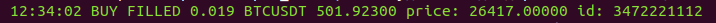
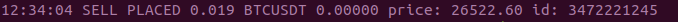
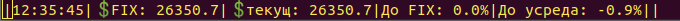

BybitFutures
BybitSpot
CommexFutures
CommexSpot
MexcSpot
Описание работы с ботами на примере BinFutures.
Bot BinFutures для для торговли на Binance Futures USDⓈ-M
САЙТ НА СТАДИИ ПОДГОТОВКИ
Ботов можно скачать на github.com:
BinFutures
https://github.com/ebot732/BinFutures
BinSpot
https://github.com/ebot732/BinSpot
===================================================

===================================================

===================================================
===================================================

===================================================

===================================================
время |BUY/SELL| статус |кол-во| пара | сумма | цена | id ордера на бирже
Стартовый и усредняющие ордера в консоли выделены зеленым цветом.
Ордер (FIX) для закрытия сделки по стратегии выделен фиолетовым цветом.
Строка состояния бота выделена желтым цветом.